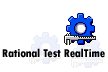

|
IBM® Rational® Test RealTimetm es, en el fondo, una herramienta de prueba de nivel de
código. Ofrece al desarrollador un conjunto completo de herramientas para la creación, ejecución y
elaboración de informes de función, método y procedimiento (pruebas centradas para lenguajes C, C++,
Ada y Javatm). La creación y ejecución de pruebas se simplifica gracias a la adición de dos
características principales.
-
Tecnología de despliegue de destino: Rational Test RealTime crea automáticamente aprovechamientos
de prueba, fragmentos para simulación y controladores gracias a una tecnología de despliegue que
puede adaptarse a cualquier entorno de compilación (por ejemplo, compilador, enlazador, depurador)
y arquitectura de destino (por ejemplo, plataforma de sistema principal, simulador, emulador, RTOS,
microchip). Consulte la guía de herramienta correspondiente a la configuración del entorno de
prueba en Rational Test RealTime para saber más sobre esta tecnología de despliegue de
destino.
-
Scripts de prueba automatizados y generación de plantillas de prueba de fragmento para simulación:
Rational Test RealTime analiza el código fuente y genera plantillas de pruebas y de fragmentos para
simulación. Para los desarrolladores que no practican diseño con prueba inicial (que presupone que
no existe todavía ningún código), esta característica produce automáticamente activos de prueba.
Todo lo que debe hacer un desarrollador es suministrar clases de datos de salida esperada y
entrada, y especificar lógica de fragmentos para simulación.
Para complementar esta funcionalidad de pruebas existe un sistema principal de herramientas de análisis
de tiempo de ejecución que, cuando se ejecuta al tiempo que se ejecutan las pruebas, descubre fugas de
memoria, cuellos de botella de rendimiento, código no probado y arquitectura implementada
incorrectamente. La combinación de análisis de tiempo de ejecución y prueba se unen para conformar un
arma poderosa al alcance de la mano del desarrollador. Esta herramienta sirve para probar el código del
desarrollador y ofrece una barrera fiable frente a una calidad reducida del producto.
Usted, el "verificador desarrollador" puede aplicar Rational Test RealTime en una etapa muy temprana de
todos los pasos de desarrollo incorporado del sistema en red o en tiempo real desde la unidad, a través
de la integración y hasta la prueba de validación, aumentando así la eficacia de sus actividades de
prueba. Optimizada para pruebas de aplicaciones distribuidas e incorporadas, en tiempo real, esta
solución de prueba versátil, completamente automatizada, de consumo reducido, puede implementarse en
cualquier componente basado en UML o C, C++, Ada, Java de cualquier tamaño para acelerar el tiempo de
fiabilidad de desarrollo incorporado correspondiente a un gran conjunto de plataformas de destino.
Rational Test RealTime ofrece ventajas significativas en la rastreabilidad completa entre código,
guiones de prueba y modelos, lo que permite rastrear la causa raíz de un problema y mantener sin
esfuerzo los activos de prueba.
|

|